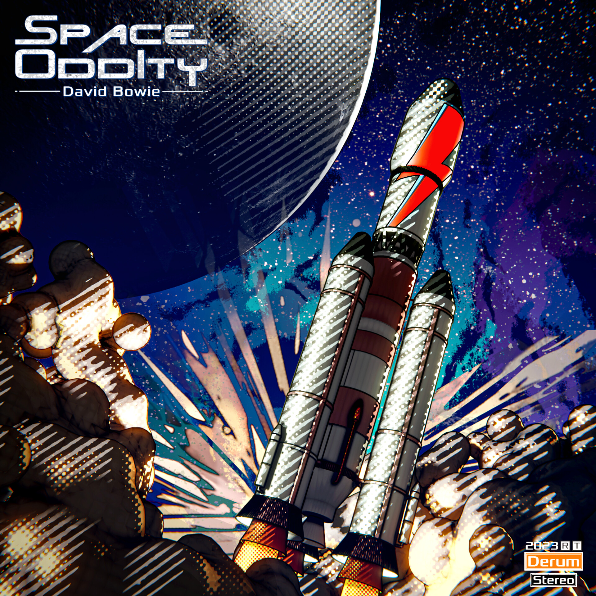

PORTFOLIO / 2022—2026
A selection my works.

A series of Poster design combining 3D and 2D, and physically printed all over campus.

Creating a series of assets to establish the theme of an exhibition. Created number of social media contents.

Creating visuals inspired by David Bowie, then printing them to make a physical disc case.
ABOUT ME
Nathaniel's Profile
My name is Nathaniel, a recent Bachelor of Design graduate from the University of Melbourne, with a strong focus in graphic design, UI/UX, visual communication and 3D modelling.
I’m confident in working with Adobe Photoshop, Illustrator, InDesign, Premiere Pro and After Effect wit experience creating a range of visual content, wireframing, user research, user journey, web development ( built this site!).
I enjoy exploring new design expressions, making me flexible and open to feedback, new ideas and learning ne workflows. I’m looking for a designer role where I can contribute, create something people will enjoy an work with a team and continue growing as a designer.
Contatcts
Feel free to contact me anytime Mon-Fri between 10:00am - 10:00pm AEDT
Contact via E-mail is preferred